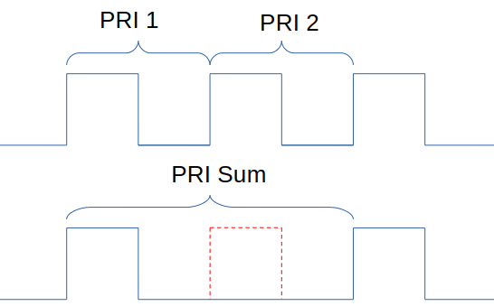
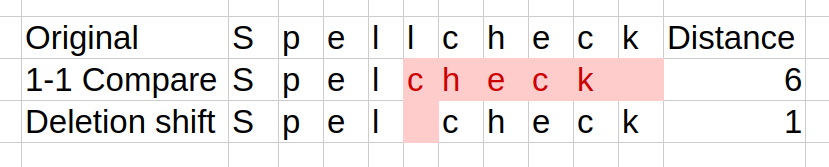
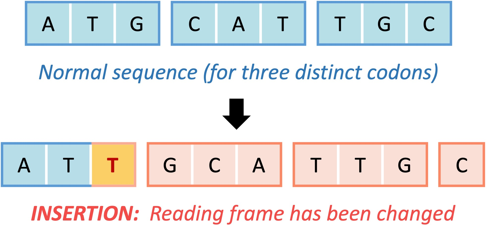
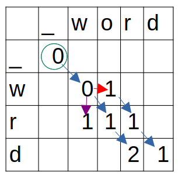
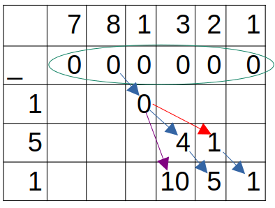

|
 |
I developed an algorithm to detect dropped pulses in sequences of
Pulse Repetition Intervals
(PRI), based on an algorithm used for Spellcheck. |
|
Edit distance in Spellcheck
The deleted l shifts all following letters. Comparing if |
DNA Frameshift Mutation Figure source |
I have seen similar problems in Spellcheck where a deleted or inserted letter shifts the rest of
the word and in Biology with identifying frameshift mutations.
While both the domain and use case are different from signal analysis, the shared shape of the
problem is comparing sequences while considering shifts.
|
Wagner Fischer algorithm
Green - Start
Blue - Substitution |
Dropped Pulse Algorithm
Green - Start
Blue - Substitution |
A substitution compares one observed letter with one reference letter while a deletion compares
zero observed letters with one reference letter.
The number of rows and columns an arrow crosses is how many elements that operation compares.
|